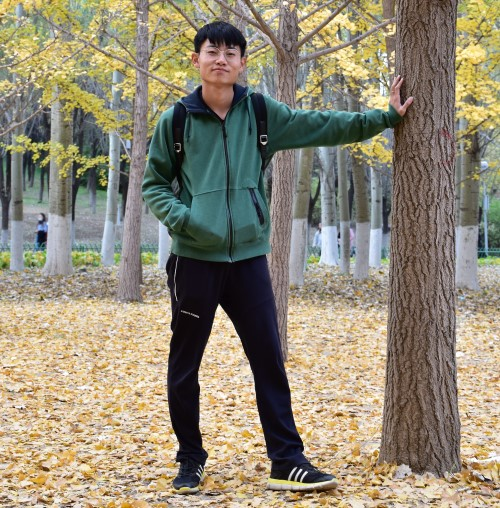

|  |
Chengyang Li (
李承阳
)
|
| 2020.9 - Now | Ph.D in CS | Peking University [PKU] | Supervisor: Prof. Yongqiang Xie | |
| 2017.9 - 2020.7 | M.S. in CISE | China University of Petroleum(Beijing) [CUP] | Supervisor: Prof. Liping Zhu | |
| 2013.9 - 2017.6 | B.S. in CIE | Northwest A&F University [NWAFU] | Supervisor: Prof. Jinrong He |
(In submission) Chengyang Li, Caidong Yang, Yang Liu, Heng Zhou, Yongqiang Xie*, Zhongbo Li*, Liping Zhu, “A multi-expert hybrid-distorted restoration network through distortion pseudo-label selection,”
(In submission) Chengyang Li, Yongqiang Xie*, Zhongbo Li, Liping Zhu, “MetaCL: A semi-supervised Meta Learning architecture via Contrastive Learning,” International Journal of Machine Learning and Cybernetics, 2023. (SCI 3) [Paper]
Chengyang Li, Heng Zhou, Yang Liu, Caidong Yang, Yongqiang Xie*, Zhongbo Li*, Liping Zhu, “Detection-friendly dehazing: object detection in real-world hazy scenes,” IEEE Transactions of Pattern Analysis and Machine Intelligence, 2023. (SCI 1(TOP), CCF A) [Paper]
Chengyang Li, Liping Zhu*, Gangyi Tian, Kun Yuan, Yi Hou, Heng Zhou, “Rethinking Referring Relationships from a Perspective of Mask-level Relational Reasoning,” Pattern Recognition, 133, 109044 (2023). (SCI 1(Top), CCF B) [Paper]
Liping Zhu, Bohua Wan, Chengyang Li*, Gangyi Tian, Yi Hou, Kun Yuan, “Dyadic relational graph convolutional networks for skeleton-based human interaction recognition,” Pattern Recognition, 115, 107920 (2021). (SCI 1(Top), CCF B) [Paper]
Liping Zhu, Chengyang Li*, Bing Wang, Kun Yuan, Zhongguo Yang, “DCGSA: A global self-attention network with dilated convolution for crowd density map generating,” Neurocomputing, 378, 455-466 (2020). (SCI 2(TOP), CCF C) [Paper]
Liping Zhu, Chengyang Li*, Zhongguo Yang, Kun Yuan, Shang Wang, “Crowd density estimation based on classification activation map and patch density level,” Neural Computing and Applications, 32(9), 5105-5116 (2020). (SCI 3, CCF C) [Paper]
Chengyang Li, Liping Zhu, Dandan Zhu, Jiale Chen, Zhanghui Pan, Xue Li, Bing Wang, “End-to-end multiplayer violence detection based on deep 3D CNN,” 2018 VII International Conference on Network, Communication and Computing, 227-230 (2019). (EI Conference) [Paper]
(In submission) Liping Zhu, Cong Peng*, Bingyao Wang, Chengyang Li, Kaijie Zhu, “CBFLNet: Cross-boundary feature learning for large-scale point cloud segmentation,”
(In submission) Heng Zhou, Chunna Tian*, Zhenxi Zhang, Chengyang Li, Yuxuan Ding, Yongqiang Xie, Zhongbo Li, “Position-Aware Relation Learning for RGB-Thermal Salient Object Detection,”
(In submission) Yi Hou, Chengyang Li, “Progressive Zero-shot Scene-specific Active Crowd Counting in Video Surveillance,”
(In submission) Liping Zhu, Kaijie Zhu, Gangyi Tian*, Bingyao Wang, Chengyang Li, Bohua Wan, “Multi-scale subgroups with interactive relation-based method for group activity recognition,”
Heng Zhou, Chunna Tian, Zhenxi Zhang, Chengyang Li, Yongqiang Xie, Zhongbo Li, “PixelGame: Infrared small target segmentation as a Nash equilibrium,” Journal of Selected Topics in Applied Earth Observations and Remote Sensing, (2022). (SCI 3) [Paper]
Ziwei Du, Heng Zhou, Chengyang Li, Zhongbo Li, Yongqiang Xie, Yuchen Dong, Jin Qi, “面向深度卷积神经网络的小目标检测算法综述,” 计算机科学, (CCF中文期刊T2) [Paper]
Caiyong Yang, Chengyang Li, Zhongbo Li, Yongqiang Xie, Jin Qi, “深度学习的图像超分辨率重建技术综述,” 计算机科学与探索, (CCF中文期刊T2) [Paper]
Fangwei Sun, Chengyang Li, Yongqiang Xie, Zhongbo Li, Caiyong Yang, Jin Qi, “深度学习应用于遮挡目标检测算法综述,” 计算机科学与探索, (CCF中文期刊T2) [Paper]
Yi Hou, Chengyang Li, Yuheng Lu, Liping Zhu, Yuan Li, Huizhu Jia, Xiaodong Xie, “Enhancing and Dissecting Crowd Counting By Synthetic data,” 2022 IEEE International Conference on Acoustics, Speech and Signal Processing, (CCF B Conference) [Paper]
Liping Zhu, Bingyao Wang*, Gangyi Tian, Wenjie Wang, Chengyang Li, “Towards Point Cloud Completion: Point Rank Sampling and Cross-Cascade Graph CNN,” Neurocomputing, 461, 1-16 (2021). (SCI 2(TOP), CCF C) [Paper]
Dandan Zhu, Gangyi Tian*, Liping Zhu, Wenjie Wang, Bingyao Wang, Chengyang Li, “LKRNet: a dual-branch network based on local key regions for facial expression recognition,” Signal, Image and Video Processing, 15(2), 263-270 (2021). (SCI 4) [Paper]
Liping Zhu, Gangyi Tian*, Bingyao Wang, Wenjie Wang, Di Zhang, Chengyang Li, “Multi-attention based semantic deep hashing for cross-modal retrieval,” Applied Intelligence, 51(8), 5927-5939 (2021). (SCI 3, CCF C) [Paper]
Liping Zhu*, Hong Zhang, Sikandar Ali, Baoli Yang, Chengyang Li, “Crowd counting via Multi-Scale Adversarial Convolutional Neural Networks,” Journal of Intelligent Systems, 30(1), 180-191 (2020). (EI) [Paper]
Yi Hou, Chengyang Li, Fan Yang, Cong Ma, Liping Zhu, Yuan Li, Huizhu Jia, Xiaodong Xie, “BBA-NET: A Bi-Branch Attention Network For Crowd Counting,” 2020 IEEE International Conference on Acoustics, Speech and Signal Processing, 4072-4076 (2020). (CCF B Conference) [Paper]
Liping Zhu*, Shang Wang, Chengyang Li, Zhongguo Yang, “License plate recognition in urban road based on vehicle tracking and result integration,” Journal of Intelligent Systems, 29(1), 1587-1597 (2019). (EI) [Paper]
Liping Zhu, Hongqi Li*, Zhongguo Yang, Chengyang Li, Yile Ao, “Intelligent logging lithological interpretation with convolution neural networks,” Petrophysics, 59(06), 799-810 (2018). (SCI 4) [Paper]